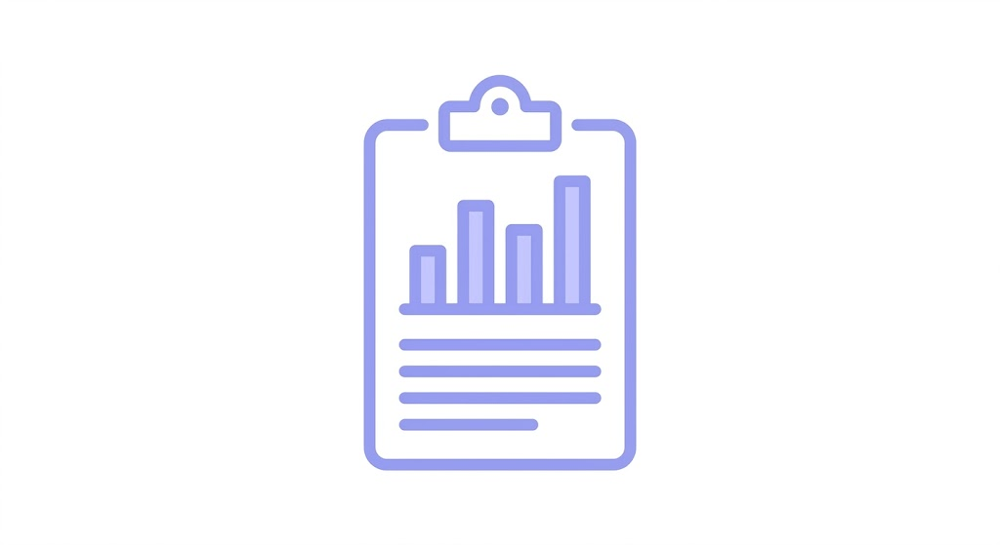
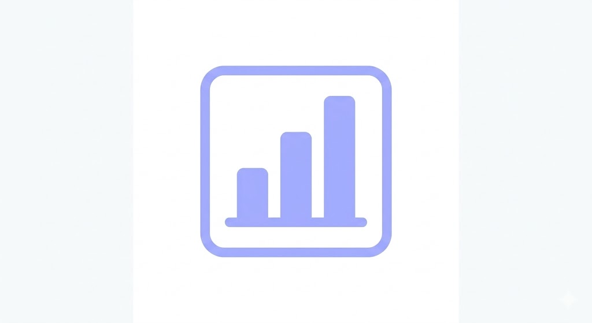
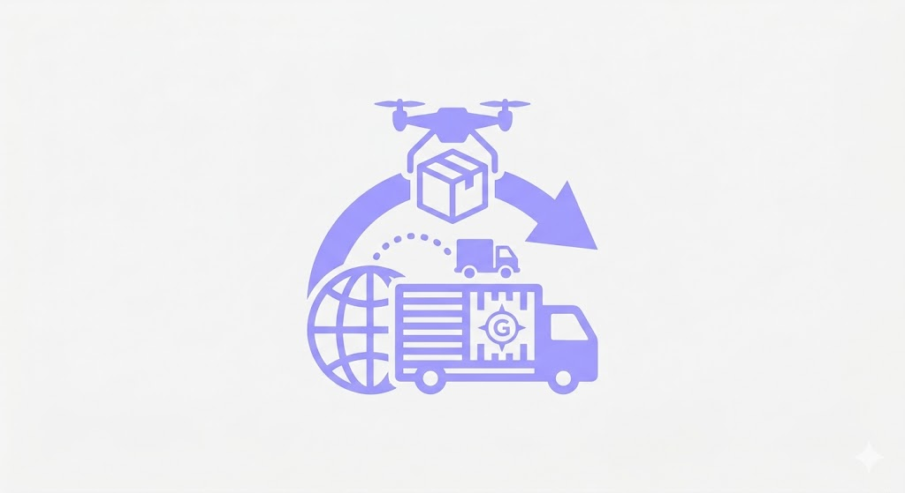

OPEN CLIENT
A Open Client é a sua ferramenta profissional de Gerenciamento
A Open Client oferece uma gama de serviços para os nossos clientes com o objetivo aumentar significativa a produtividade do seu negócio!
NOSSOS SERVIÇOS

Gerar Relatórios

Gerar Gráficos

Gerenciar
Logística
“Desde que começamos a usar o sistema, a gestão da minha empresa mudou completamente. Antes, eu perdia muito tempo organizando informações, controlando estoque e acompanhando clientes de forma manual. Era tudo muito confuso e sujeito a erros.
Com o SaaS de gerenciamento, tudo ficou centralizado e muito mais prático. Hoje consigo acompanhar vendas, fluxo de caixa, estoque e desempenho da equipe em tempo real, o que me dá muito mais segurança na tomada de decisões.
Outro ponto que me surpreendeu foi a facilidade de uso. Mesmo sem ter um conhecimento técnico avançado, consegui me adaptar rapidamente à plataforma.
Além disso, o suporte é ágil e sempre disposto a ajudar.
Sem dúvida, foi um investimento que trouxe mais organização, produtividade e crescimento para o meu negócio. Recomendo para qualquer empresário que queira profissionalizar sua gestão e ganhar tempo no dia a dia.”
“Adotar esse SaaS de gerenciamento foi um divisor de águas para a minha empresa. Eu sempre tive dificuldade em ter uma visão clara de tudo que estava acontecendo no negócio, principalmente na parte financeira e no controle de processos.
Depois que comecei a usar o sistema, passei a ter relatórios completos e informações organizadas em poucos cliques. Isso me ajudou não só a identificar problemas rapidamente, mas também a enxergar oportunidades de crescimento que antes passavam despercebidas.
O que mais gostei foi a praticidade no dia a dia. Tarefas que antes levavam horas agora resolvo em minutos. Isso me permite focar mais na estratégia da empresa, ao invés de ficar presa a processos operacionais.
Hoje, sinto que tenho mais controle, mais confiança nas decisões e, principalmente, mais tempo para fazer o meu negócio evoluir. Foi, sem dúvida, uma das melhores escolhas que já fiz como empresária.”